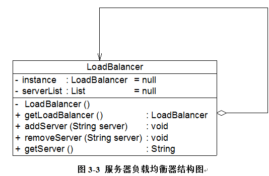
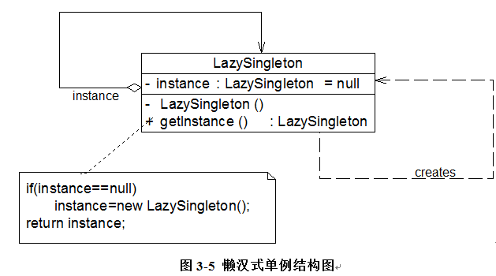

1. 为什么需要单例模式#
windows系统的任务管理器，只能有一个,唯一性的原因：
- 如果能弹出多个窗口，且这些窗口的内容完全一致，全都是重复对象，那势必会浪费资源，尤其是任务管理器会需要进入内核态调取各种状态信息，会对性能造成一定的影响。
- 而且多个窗口之间需要保持一致性，绝对的同步，相互之间的同步也是资源的浪费。
现实中的例子，就是为了节约系统资源，有时需要确保系统中某个类只有唯一一个实例，当这个实例创建成功以后，我们无法再创建一个同类型的其他对象，所有的操作都只能基于这个唯一的实例。
2. 单例模式概述#
2.1 模拟任务管理类#
class TaskManager
{
public TaskManager() {...} //初始化窗口
public void displayProcesses() {……} //显示进程
public void displayServices() {……} //显示服务
}
对其进行重构，为了使其是单一实例的，那我们需要禁止类的外部直接使用new来创建对象 —–> 将其构造函数的可见性变为private
public TaskManager() {...}
在类内部创建对象，保存这个唯一实例
private static TaskManager tm = null;
public static TaskManager getInstance() {
if (tm == null) {
tm = new TaskManager();
}
return tm;
}
getInstance()定义成一个静态方法，这样可以直接通过类名来使用
2.2 定义#
单例模式(Singleton Pattern)：确保某一个类只有一个实例，而且自行实例化并向整个系统提供这个实例，这个类称为单例类，它提供全局访问的方法。单例模式是一种对象创建型模式。
- 只有一个实例
- 必须自行创建这个实例
- 必须自行向整个系统提供这个实例

2.3 负载均衡器的设计与实现#
Sunny软件公司承接了一个服务器负载均衡(Load Balance)软件的开发工作，该软件运行在一台负载均衡服务器上，可以将并发访问和数据流量分发到服务器集群中的多台设备上进行并发处理，提高系统的整体处理能力，缩短响应时间。由于集群中的服务器需要动态删减，且客户端请求需要统一分发，因此需要确保负载均衡器的唯一性，只能有一个负载均衡器来负责服务器的管理和请求的分发，否则将会带来服务器状态的不一致以及请求分配冲突等问题。如何确保负载均衡器的唯一性是该软件成功的关键。
使用单例模式来设计该负载均衡器：

import java.util.*;
//负载均衡器LoadBalancer：单例类，真实环境下该类将非常复杂，包括大量初始化的工作和业务方法，考虑到代码的可读性和易理解性，只列出部分与模式相关的核心代码
class LoadBalancer {
//私有静态成员变量，存储唯一实例
private static LoadBalancer instance = null;
//服务器集合
private List serverList = null;
//私有构造函数
private LoadBalancer() {
serverList = new ArrayList();
}
//公有静态成员方法，返回唯一实例
public static LoadBalancer getLoadBalancer() {
if (instance == null) {
instance = new LoadBalancer();
}
return instance;
}
//增加服务器
public void addServer(String server) {
serverList.add(server);
}
//删除服务器
public void removeServer(String server) {
serverList.remove(server);
}
//使用Random类随机获取服务器
public String getServer() {
Random random = new Random();
int i = random.nextInt(serverList.size());
return (String)serverList.get(i);
}
}
3. 饿汉式单例模式和懒汉式单例模式#
3.1 饿汉式单例模式#

class EagerSingleton {
private static final EagerSingleton instance = new EagerSingleton();
private EagerSingleton() { }
public static EagerSingleton getInstance() {
return instance;
}
}
在类加载的时候，静态变量instance就会被初始化，此时类的私有构造函数会被调用，然后单例类的唯一实例会在这个时候被创建出来。
3.2 懒汉式单例模式#

在第一个调用getInstance()方法的时候进行实例化。又叫做延迟加载技术——在需要的时候再加载实例，为了避免多个线程同时调用getInstance()方法，我们需要使用synchronized关键字：
class LazySingleton {
private static LazySingleton instance = null;
private LazySingleton() { }
synchronized public static LazySingleton getInstance() {
if (instance == null) {
instance = new LazySingleton();
}
return instance;
}
}
这里实际上不需要多整个getInstance()方法要求synchronized， 只需要在new的时候，是不能并发的就可以了:
public static LazySingleton getInstance() {
if (instance == null) {
synchronized (LazySingleton.class) {
instance = new LazySingleton();
}
}
return instance;
}
还是有可能存在不唯一的状态，即在第一个线程做实例化的时候，第二个线程已经完成了判断，在等待实例化了 所以需要做double check locking：
class LazySingleton {
// volatile 保证在多线程可以被正确处理
private volatile static LazySingleton instance = null;
private LazySingleton() { }
public static LazySingleton getInstance() {
//第一重判断
if (instance == null) {
//锁定代码块
synchronized (LazySingleton.class) {
//第二重判断
if (instance == null) {
instance = new LazySingleton(); //创建单例实例
}
}
}
return instance;
}
}
4. Initialization Demand Holder 进行单例实现#
结合饿汉模式和饱汉模式的优点，新的实例化方式：
//Initialization on Demand Holder
class Singleton {
private Singleton() {
}
private static class HolderClass {
private final static Singleton instance = new Singleton();
}
public static Singleton getInstance() {
return HolderClass.instance;
}
public static void main(String args[]) {
Singleton s1, s2;
s1 = Singleton.getInstance();
s2 = Singleton.getInstance();
System.out.println(s1==s2);
}
}
在单例类中增加了一个静态内部类，在这个内部类中创建单例对象，再将这个单例对象通过getInstance()给外界使用。通过这种方式，我们实现了延迟加载，也保证了线程安全，不影响系统性能
5. 优缺点分析#
5.1 优点#
- 提供了对唯一实例的访问控制
- 因为内存中只存在一个对象，因此可以节约系统资源。尤其是对于一些需要频繁创建和销毁的对象，单例模式可以很大程度上提高系统性能
5.2 缺点#
- 扩展困难
- 职责相对比较重。因为单例类既充当了工厂角色，提供了工厂方法，同时又充当了产品角色，包含一些业务方法，将产品的创建和产品的本身的功能融合到一起。
- 一些语言的垃圾自动回收技术，如果实例化的对象在一段时间内没有被使用，系统会认为它是垃圾，会自动销毁并回收资源。